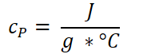
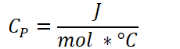
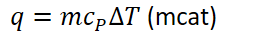
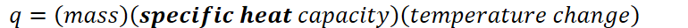
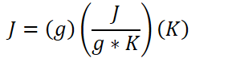
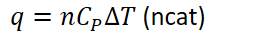
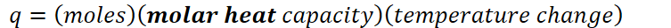
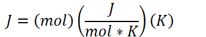
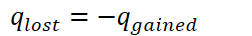

Heat capacity: the ability for a substance to absorb heat before the temperature rises
The amount of energy (J) absorbed per temperature (C) increase
The amount of heat (J or kJ) to raise the temperature 1 degree C or 1 K
2 types of heat capacity:
Specific heat capacity
{width="2.125in" height="0.7083333333333334in"}
Lowercase c
Joules per gram-degree Celsius
{width="4.416666666666667in" height="0.3541666666666667in"}
Degree Celsius or Kelvin
{width="8.34375in" height="0.3541666666666667in"}
Molar heat capacity
{width="2.3958333333333335in" height="0.65625in"}
Uppercase C
Joules per mol-degree Celsius
{width="4.416666666666667in" height="0.3541666666666667in"}
Degree Celsius or Kelvin
{width="8.333333333333334in" height="0.3541666666666667in"}
{width="7.458333333333333in" height="0.3541666666666667in"}
{width="2.8125in" height="0.3541666666666667in"}
{width="8.020833333333334in" height="0.3333333333333333in"}
{width="3.0104166666666665in" height="0.7604166666666666in"}
{width="2.6979166666666665in" height="0.3541666666666667in"}
{width="7.84375in" height="0.3333333333333333in"}
{width="3.5729166666666665in" height="0.6458333333333334in"}
{width="2.625in" height="0.375in"}
Energy cannot be created nor destroyed, merely conserved